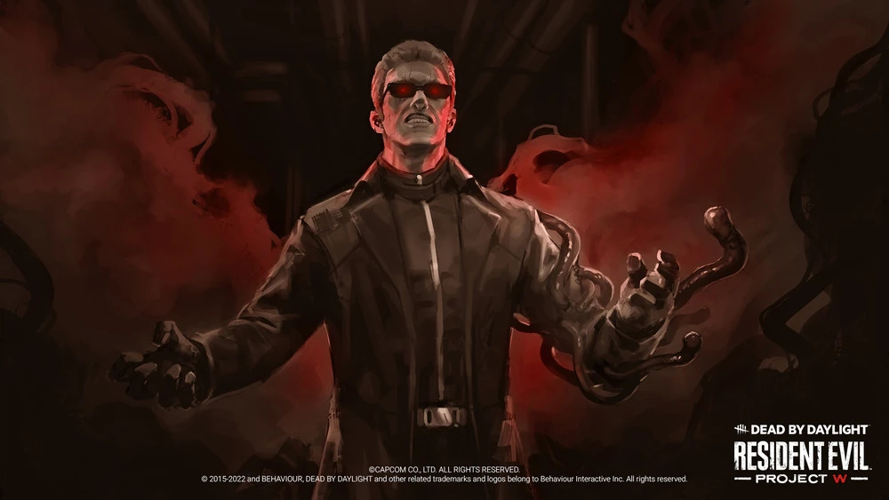

O Vilão
- Nome: Albert Wesker
- Genero: Masculino
- Origem: Americano
- Poder: Salto Virulento
- Arma: Faca de Combate
- Velocidade de Movimento: 115 % | 4,6 m/s
- Raio de Terror: 40 metros
- DLC: CAPÍTULO 25: Resident Evil™: PROJETO W
- Dublador: Connor Fogarty
História do Personagem
Albert Wesker era um funcionário de alto escalão da Umbrella Corporation. Embora ele tenha feito grandes avanços com a Umbrella, sua ambição o levou a trair a corporação. Acreditando ser a melhor cobaia, ele se expôs ao vírus Protótipo. Agora com força sobre-humana, Wesker fingiu sua morte e foi para o subsolo com um novo plano: expor o mundo ao Uroboros, uma arma biológica que eliminaria os fracos e deixaria apenas os fortes.
Wesker começou a colocar seu plano em ação na África, mas foi confrontado por membros da Aliança de Avaliação de Segurança de Bioterrorismo em um hangar abastecido com mísseis carregando Uroboros. Determinado a estar na vanguarda da evolução, ele mais uma vez se tornou uma cobaia. Expondo-se a Uroboros, ele começou a evoluir de maneiras que nunca poderia ter imaginado. Mas quando ele sentiu suas células mudarem, uma estranha névoa negra se infiltrou no hangar e encheu sua visão. Quando a névoa finalmente se dissipou, ele se viu em outro mundo cercado por seres inferiores que mereciam ser eliminados de sua miséria.
Habilidades